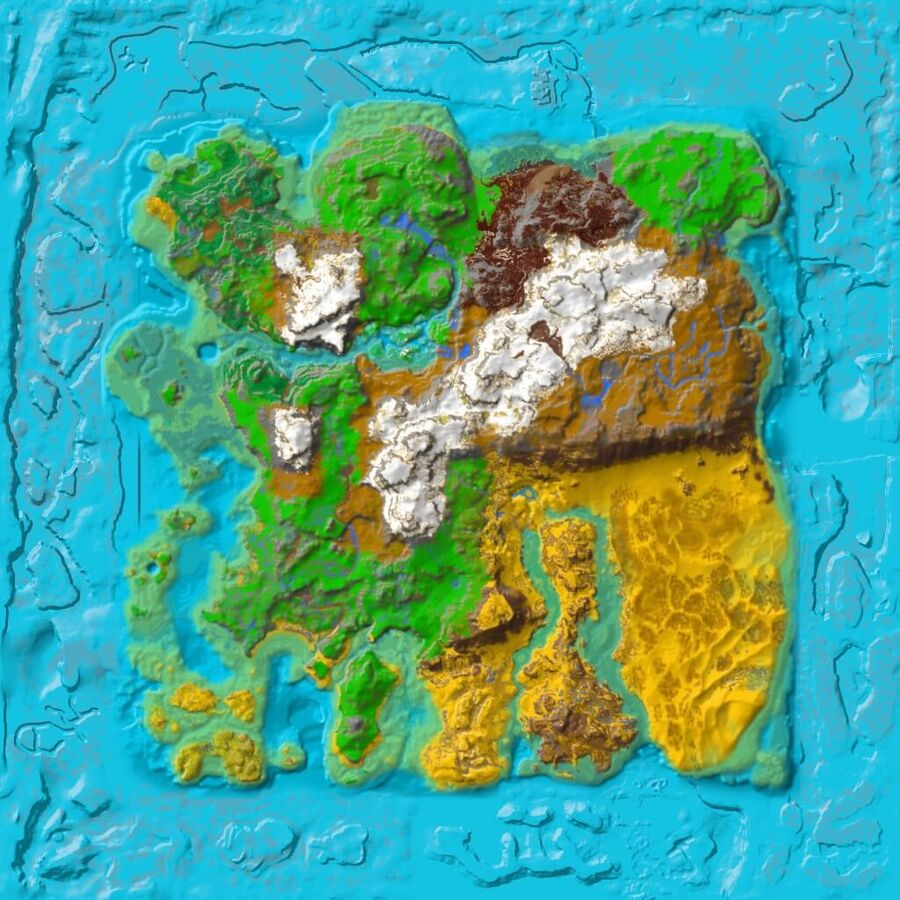

Community Structures
Public Wyvern Trap
24:54 - 73:42
Public Library
57:76 - 45:52
Bases
[JDO] John Doe @ Atlantis
11:11 - 11:11
[SVN] Sven @ Clueless Clues
36:17 - 22:71
10
20
30
40
50
60
70
80
90
10
20
30
40
50
60
70
80
90
